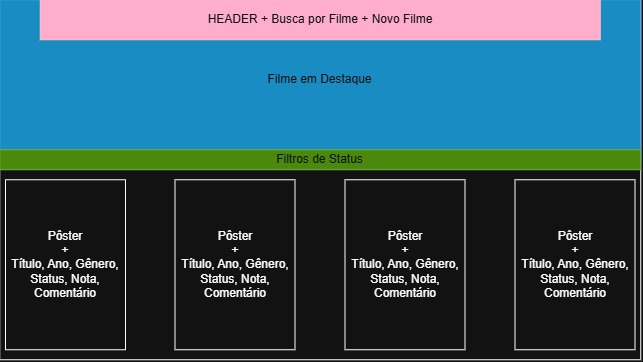

O CineTrack é um catálogo pessoal de filmes desenvolvido na disciplina de Programação de Sistemas Web da Universidade Estadual de Maringá. Nele, é possível acompanhar o que já foi assistido, o que está em andamento e o que ainda se deseja assistir.
Coleção inicial da disciplina
| Título | Ano | Gênero | Status |
|---|---|---|---|
| A Origem | 2010 | Ficção científica | Assistido |
| Parasita | 2019 | Suspense | Assistido |
| O Auto da Compadecida | 2000 | Comédia | Assistido |
| Duna: Parte Dois | 2024 | Ficção científica | Assistindo |
| Interestelar | 2014 | Ficção científica | Quero assistir |
| Cidade de Deus | 2002 | Drama | Quero assistir |
Planejamento da interface

Como os dados são organizados
Cada filme possui sete campos, conforme os requisitos do projeto:
- Título: nome do filme.
- Ano: ano de lançamento.
- Gênero: categoria cinematográfica.
- Pôster: URL da imagem da capa.
- Status: Assistido, Assistindo ou Quero assistir.
- Nota: avaliação de 1 a 5 estrelas.
- Comentário: análise ou observações pessoais.